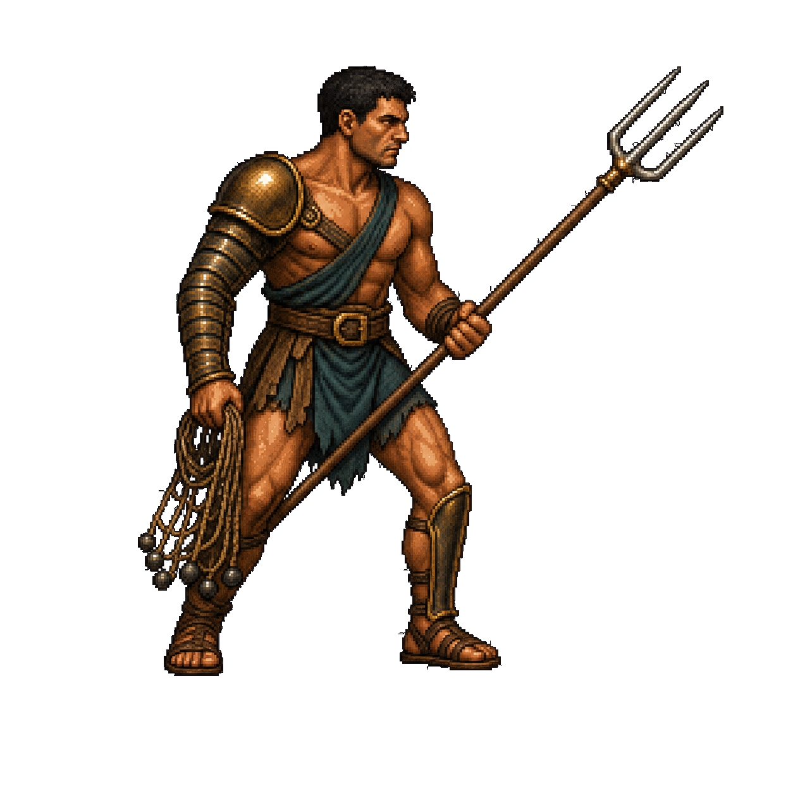
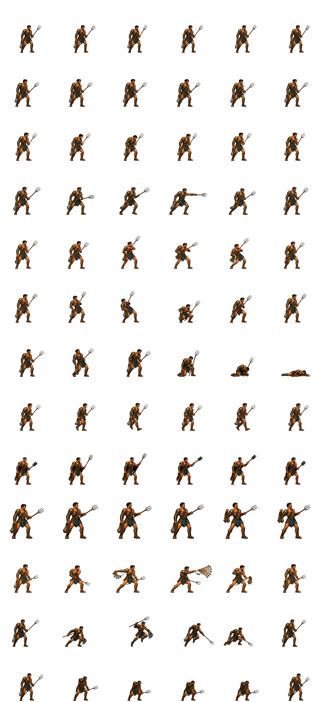

UNIFIED SWORDSMAN · V16
Временный мечник для всех классов
Четырнадцать анимаций собраны в точную сетку. Строка 11 — усиленный классовый удар, строка 12 — оглушённая защитная стойка, строка 13 — удар с разворота.

GLADIATOR / ASSET CHECK
ПРОВЕРКА МАТРИЦЫ · БЕЗ БОЯ
Оба листа имеют логическую ячейку бойца 256×256 px. Мечник расширен до 14 строк, ретиарий — до 13 строк усиленным прыжковым ударом и оглушением. Физическая ячейка 384×384 оставляет прозрачный буфер для оружия; соперник использует зеркальную копию.
ПОКАДРОВАЯ ПРОВЕРКА
Ретиарий использует собственную полную матрицу с трезубцем и сетью. Остальные классы временно используют лист мечника. Для атаки и особого приёма поверх кадра проигрывается тот же программный размах, что и в бою; результат можно переключить отдельно. Автосмену состояний при необходимости можно включить вручную.
RETIARIUS · CANONICAL REFERENCE
Этот образ фиксирует направление вправо, пропорции, экипировку, прямой трезубец с тремя зубцами и собранную сеть. Он служит единственным референсом для генерации всех одиннадцати строк.
Статус: референс зафиксирован · буферная матрица V5 собрана и подключена

UNIFIED SWORDSMAN · V16
Четырнадцать анимаций собраны в точную сетку. Строка 11 — усиленный классовый удар, строка 12 — оглушённая защитная стойка, строка 13 — удар с разворота.
UNIFIED RETIARIUS · V8
Тринадцать строк выровнены по корню ног и плотному контуру тела. Строка 10 показывает бросок сети, строка 11 — усиленный удар, строка 12 — оглушённую защитную стойку.

Масштаб определяется по плотному телу. Длинное оружие может занимать прозрачный буфер физической ячейки и не должно уменьшать бойца.